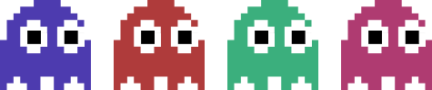

1993'te, Kayseri'de doğdu. İlgi alanları: Edebiyat, coğrafya, fotoğrafçılık, astronomi, programlama, tasarım, jeoloji, matematik, psikoloji.
Her şeyi eleştirmeyi ve legoları çok sever, legocu ruhludur. İcat etme, (Amerika'yı yeniden) keşfetme meraklısıdır. Aramayı bulmaktan çok sever. Elektronik müzikten hoşlanır. Frank Lampard ve Adam Savage hayranıdır.
Yaratıcılık gerektirmeyen herhangi bir şeyle uğraşmaktan nefret eder (hiç ödev yapmadı). Kendini tekrarlamaktan hiç hoşlanmaz. Kitap seçer. İnternetten tanıştığı arkadaşları çıkarıldığında geriye hiç arkadaşı kalmaz.
Javascript ilgi alanlarının odağındadır. Jquery, Backbone, Coffeescript, Handlebars dörtlüsüyle iyi anlaşır. CSS ve HTML'i iyi bilir. Python'da Seleniumla testler yazmaktan geri durmaz. Bu işlere 7 yıl kadar önce başlamıştır.
OOP geliştirme heveslisidir, MVC yapısını sever. Git kullanır. Javascript geliştirme ve tarayıcı otomasyonuyla test yaparak para kazanmışlığı vardır.
Tasarımda özgünlüğü ve kullanılabilirliği önplanda tutar. Tipografiye önem vermek ister; bazen sadelik, bazen cümbüş yanlısıdır.
Fotoğrafçılığa merakı büyüktür. Farklı teknikler öğrenip deneysel çalışmalar yapmaya bayılır. Giriş seviye D-SLR makinesinin sınırları dahilinde yapılabilecek en uç ve deneysel çalışmaları keşfetmeye çalışır.
07.08.13 ~ 08.01.14